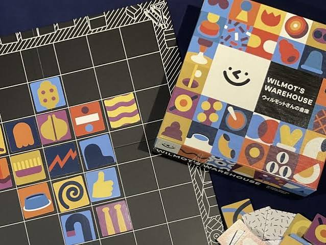

調査の目的
「自然と会話が生まれる場所ってどこだろう？」と考えたとき、人と人をつなぐコミュニケーションの場として、ボードゲームの持つ魅力に注目しました！
そこで今回は、大学からも近くて初心者からコアなファンまでみんなで楽しめる「JELLY JELLY CAFE 高田馬場店」にお邪魔してきました！
「自然と会話が生まれる場所ってどこだろう？」と考えたとき、人と人をつなぐコミュニケーションの場として、ボードゲームの持つ魅力に注目しました！
そこで今回は、大学からも近くて初心者からコアなファンまでみんなで楽しめる「JELLY JELLY CAFE 高田馬場店」にお邪魔してきました！
お客さんがお店に来るきっかけ・理由
店長さんに伺ったところ、テレビの特集を見て「自分もボードゲームをやってみたい！」と興味を持って訪れる方がとても多いそうです！
「とにかくゲームの種類がたくさんあって面白そう」「有名な大手カフェだから安心」という理由に加えて、高田馬場店ならではのポイントとして「大学から近くて行きやすい！」という声もたくさん挙がっていました！
店長さんに伺ったところ、テレビの特集を見て「自分もボードゲームをやってみたい！」と興味を持って訪れる方がとても多いそうです！
「とにかくゲームの種類がたくさんあって面白そう」「有名な大手カフェだから安心」という理由に加えて、高田馬場店ならではのポイントとして「大学から近くて行きやすい！」という声もたくさん挙がっていました！

高田馬場店の看板。入り口は地下にあって秘密基地感がありました。

高田馬場の客層
立地柄、やっぱり18〜22歳の大学生がメイン層とのことでした！
平日は4人前後の学生グループや仕事帰りの社会人カップルが多く、休日になると学生と社会人がちょうど半々くらいで賑わうそうです。なかにはボードゲームを通じた新しい出会いや交流を目的に訪れるお客さんもいて、幅広いシーンで親しまれています！
立地柄、やっぱり18〜22歳の大学生がメイン層とのことでした！
平日は4人前後の学生グループや仕事帰りの社会人カップルが多く、休日になると学生と社会人がちょうど半々くらいで賑わうそうです。なかにはボードゲームを通じた新しい出会いや交流を目的に訪れるお客さんもいて、幅広いシーンで親しまれています！